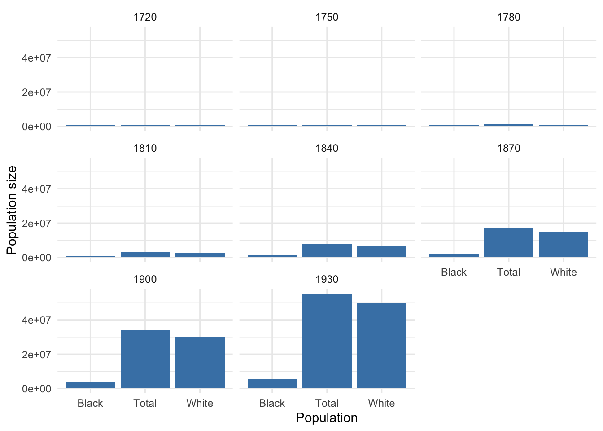
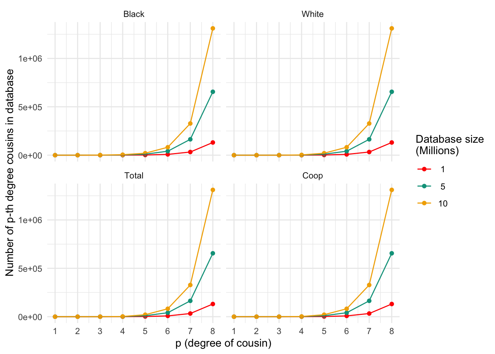
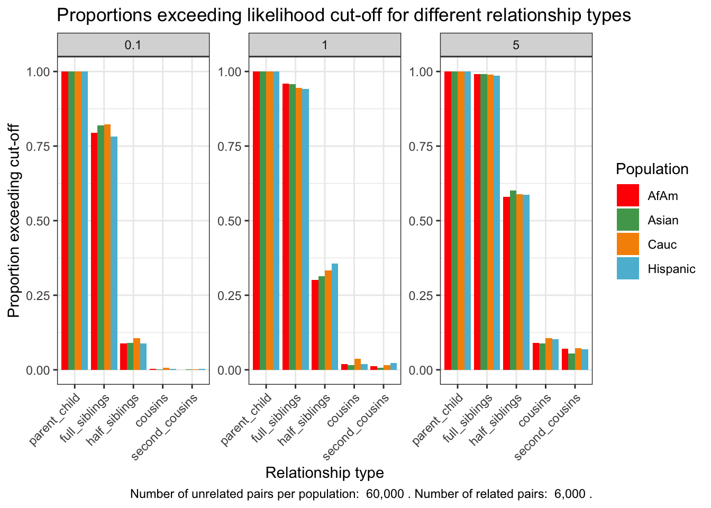

Analyses
Tina Lasisi
2024-03-01 14:08:40
Last updated: 2024-03-01
Checks: 7 0
Knit directory: PODFRIDGE/
This reproducible R Markdown analysis was created with workflowr (version 1.7.1). The Checks tab describes the reproducibility checks that were applied when the results were created. The Past versions tab lists the development history.
Great! Since the R Markdown file has been committed to the Git repository, you know the exact version of the code that produced these results.
Great job! The global environment was empty. Objects defined in the global environment can affect the analysis in your R Markdown file in unknown ways. For reproduciblity it’s best to always run the code in an empty environment.
The command set.seed(20230302) was run prior to running
the code in the R Markdown file. Setting a seed ensures that any results
that rely on randomness, e.g. subsampling or permutations, are
reproducible.
Great job! Recording the operating system, R version, and package versions is critical for reproducibility.
Nice! There were no cached chunks for this analysis, so you can be confident that you successfully produced the results during this run.
Great job! Using relative paths to the files within your workflowr project makes it easier to run your code on other machines.
Great! You are using Git for version control. Tracking code development and connecting the code version to the results is critical for reproducibility.
The results in this page were generated with repository version 2bb56e0. See the Past versions tab to see a history of the changes made to the R Markdown and HTML files.
Note that you need to be careful to ensure that all relevant files for
the analysis have been committed to Git prior to generating the results
(you can use wflow_publish or
wflow_git_commit). workflowr only checks the R Markdown
file, but you know if there are other scripts or data files that it
depends on. Below is the status of the Git repository when the results
were generated:
Ignored files:
Ignored: .DS_Store
Ignored: .Rhistory
Ignored: .Rproj.user/
Ignored: analysis/.DS_Store
Ignored: output/.DS_Store
Note that any generated files, e.g. HTML, png, CSS, etc., are not included in this status report because it is ok for generated content to have uncommitted changes.
These are the previous versions of the repository in which changes were
made to the R Markdown (analysis/analyses.Rmd) and HTML
(docs/analyses.html) files. If you’ve configured a remote
Git repository (see ?wflow_git_remote), click on the
hyperlinks in the table below to view the files as they were in that
past version.
| File | Version | Author | Date | Message |
|---|---|---|---|---|
| html | 9e71347 | Tina Lasisi | 2024-01-22 | Build site. |
| Rmd | aca0182 | Tina Lasisi | 2023-08-07 | Update FPR |
| Rmd | f8cdf88 | Tina Lasisi | 2023-07-31 | Update analyses.Rmd |
| Rmd | 7743dac | jakevc | 2023-07-12 | update analyiss to fix calc plot |
| Rmd | 7c36abe | Tina Lasisi | 2023-07-10 | Update analyses.Rmd |
| Rmd | 4168249 | Tina Lasisi | 2023-06-27 | Update analyses and cluster script |
| html | c280b6f | Tina Lasisi | 2023-04-16 | Build site. |
| html | f89a90f | Tina Lasisi | 2023-04-16 | Build site. |
| html | df27992 | Tina Lasisi | 2023-04-10 | Update dates and analyses |
| Rmd | 7cacc4d | Tina Lasisi | 2023-03-27 | Add multiple pop sizes |
| html | c6a5aa0 | Tina Lasisi | 2023-03-27 | Build site. |
| Rmd | 7d6708b | Tina Lasisi | 2023-03-27 | adding captions |
| html | b44fa2c | Tina Lasisi | 2023-03-27 | Build site. |
| Rmd | 3c181d1 | Tina Lasisi | 2023-03-27 | updating analyses for all populations |
| Rmd | f759e40 | Tina Lasisi | 2023-03-24 | Return analyses to original |
| html | f759e40 | Tina Lasisi | 2023-03-24 | Return analyses to original |
| Rmd | c9daa86 | Tina Lasisi | 2023-03-23 | Update analyses.Rmd |
| html | cdd09b6 | Tina Lasisi | 2023-03-23 | Build site. |
| Rmd | b24ae94 | Tina Lasisi | 2023-03-23 | Generating figures across variable combos |
| Rmd | 6605057 | Tina Lasisi | 2023-03-20 | Update parameters for generations |
| html | 6605057 | Tina Lasisi | 2023-03-20 | Update parameters for generations |
| html | 5f805fe | Tina Lasisi | 2023-03-06 | Build site. |
| Rmd | 5106bab | Tina Lasisi | 2023-03-06 | add analyses |
| html | c3948af | Tina Lasisi | 2023-03-04 | Build site. |
| html | f02bc38 | Tina Lasisi | 2023-03-03 | Build site. |
| html | c9130d5 | Tina Lasisi | 2023-03-03 | wflow_git_commit(all = TRUE) |
| html | a4a7d45 | Tina Lasisi | 2023-03-03 | Build site. |
| html | 00073fd | Tina Lasisi | 2023-03-03 | Build site. |
| html | 51ed5a6 | Tina Lasisi | 2023-03-02 | Build site. |
| Rmd | 13ed9ae | Tina Lasisi | 2023-03-02 | Publishing POPFORGE |
| html | 13ed9ae | Tina Lasisi | 2023-03-02 | Publishing POPFORGE |
# Load necessary packages
library(wesanderson) # for color palettes
library(tidyverse) #data wrangling etc── Attaching core tidyverse packages ──────────────────────── tidyverse 2.0.0 ──
✔ dplyr 1.1.4 ✔ readr 2.1.5
✔ forcats 1.0.0 ✔ stringr 1.5.1
✔ ggplot2 3.4.4 ✔ tibble 3.2.1
✔ lubridate 1.9.3 ✔ tidyr 1.3.0
✔ purrr 1.0.2
── Conflicts ────────────────────────────────────────── tidyverse_conflicts() ──
✖ dplyr::filter() masks stats::filter()
✖ dplyr::lag() masks stats::lag()
ℹ Use the conflicted package (<http://conflicted.r-lib.org/>) to force all conflicts to become errorslibrary(RColorBrewer)
# Set path to the data file
path <- file.path(".", "data")
savepath <- file.path(".", "output")
# Set up vector for cousin degree
p <- c(1:8)
# Set up initial population size
N <- 76e6 # what does this do?# Read in data on US population sizes by year
US_pop_fp <- file.path(path, "est-pop-combo.csv")
US_pop_coop_fp <- file.path(path, "US_popsize.csv")
# Read in data on US population sizes by year
pop1 <- read.csv(US_pop_fp) %>%
select(Year, Black, White, Total)
pop2 <- read.csv(US_pop_coop_fp) %>%
rename(Coop = Population)
pop <- left_join(pop1, pop2)Joining with `by = join_by(Year)`# Set up vector of database sizes to test
DB.sizes <- c(1e6, 5e6, 10e6)
# DB.sizes <- c(0.05*1e6, 0.15*1e6, 0.50*1e6, 1e6, 5e6, 10e6)
# Set color palette for graphs
my.cols <- wes_palette("Darjeeling1")
# my.cols <- brewer.pal(n = 6, name = "Dark2")
# set starting generation
start_gen <- 1950# Calculate number of grandparents by generation
calc_grandparent_gen <- function(year, p = c(1:8)) {
yrs_grandparent_gen <- year - 30 * (p + 1)
return(yrs_grandparent_gen)
}
# Define a function to calculate final population sizes based on input data file and generation of grandparents
calc_final_N <- function(pop=pop, start_gen=start_gen) {
# Calculate number of grandparents by generation
yrs_grandpar_gen <- calc_grandparent_gen(start_gen)
# Get population sizes by year for grandparents' generation
gp_Ns <- pop %>%
filter(Year %in% yrs_grandpar_gen)
# Scale population size down by 50% (assumed number of potential parents) and 90% of those have children + set minimum for populations
# scaled_N <- gp_Ns
scaled_N <- gp_Ns %>%
mutate(across(!Year, ~ case_when(. * 0.5 * 0.9 < 1e6 ~ 1e6,
TRUE ~ . * 0.5 * 0.9)))
return(scaled_N)
}N <- calc_final_N(pop, start_gen) %>%
arrange(desc(Year))
# N2 <- calc_final_N(pop2, start_gen)# Define the population sizes and names
populations <- N %>%
pivot_longer(-Year, names_to = "Population", values_to = "N") %>%
mutate(Population = factor(Population,
levels = c("Black", "White", "Total", "Coop")))
# Create a ggplot object to visualize population sizes
pop_size_plot <- ggplot(populations, aes(x = Population, y = N)) +
geom_bar(stat = "identity", fill = "steelblue") +
labs(x = "Population", y = "Population size") +
theme_minimal() +
facet_wrap(~Year, scales = "free")
# Display the plot
pop_size_plot
Probability of p-th degree cousin
calc_prob <- function(p, DB.sizes, N) {
pop_columns <- N[, -1, drop = FALSE]
results_df <- tibble(Population = character(), p.degree = numeric(), DB.size = numeric(), Prob = numeric())
for (pop_name in colnames(pop_columns)) {
pop_vector <- pop_columns[[pop_name]]
for (db_size in DB.sizes) {
prob.no.rellys <- exp(-2^(2 * p - 2) * db_size / pop_vector)
prob.rel <- 1 - prob.no.rellys
results_df <- rbind(results_df, tibble(Population = pop_name, p.degree = p, DB.size = db_size, Prob = prob.rel))
}
}
return(results_df)
}
plt_df <- calc_prob(p, DB.sizes, N) %>%
mutate(Population = factor(Population,
levels = c("Black", "White", "Total", "Coop")))ggplot_prob <- function(data, my.cols=my.cols) {
# Group data by Population and DB.size
data_grouped <- data %>%
group_by(Population, DB.size)
plot <- ggplot(data_grouped, aes(x = p.degree, y = Prob, color = factor(DB.size), group = factor(DB.size))) +
geom_point() +
geom_line() +
scale_color_manual(values = my.cols, name = "Database size\n(Millions)",
labels = format(unique(data$DB.size) / 1e6, dig = 1)) +
labs(x = "p (degree of cousin)", y = "Probability of at least one p-th cousin in database") +
theme_minimal() +
facet_wrap(~ Population, labeller = labeller(Population = as_labeller(function(x) x))) +
scale_x_continuous(breaks = 1:8) + # Show every value from 1 to 8 on the x-axis
scale_y_continuous(limits = c(0.0, 1.0)) # Set y-axis limits to 0.0 and 1.0
return(plot)
}
ggplot_prob(plt_df, my.cols)
Probability of finding at least one p-th degree cousin in a database of varying sizes for different populations. Each panel represents a population, and the lines within each panel correspond to different database sizes
| Version | Author | Date |
|---|---|---|
| b44fa2c | Tina Lasisi | 2023-03-27 |
# generate ggplot object with populations in different colors
ggplot_prob_combined <- function(data){
palette <- brewer.pal(n = length(unique(data$Population)), "Dark2")
data <- data %>%
mutate(DB.size.formatted = factor(scales::label_number(scale = 1/1e6, accuracy = 1, suffix = " Million")(DB.size)))
plot <- ggplot(data, aes(x = p.degree, y = Prob, color = Population, group = interaction(Population, DB.size.formatted))) +
geom_point() +
geom_line() +
scale_color_manual(values = palette, name = "Population") +
labs(x = "p (degree of cousin)", y = "Probability of at least one p-th cousin in database") +
theme_minimal() +
facet_wrap(~DB.size.formatted)
return(plot)
}
ggplot_prob_combined(plt_df)
Differences between populations in the probability of finding at least one p-th degree cousin in a database of varying sizes. Each panel represents a population, and the lines within each panel correspond to different database sizes
Number of p-th degree cousins
calc_cousins <- function(p, DB.sizes, N) {
pop_columns <- N[, -1, drop = FALSE]
results_df <- tibble(Population = character(), p.degree = numeric(), DB.size = numeric(), Num_Cousins = numeric())
for (pop_name in colnames(pop_columns)) {
pop_vector <- pop_columns[[pop_name]]
for (db_size in DB.sizes) {
num_cousins <- 4^(p) * db_size / (pop_vector / 2)
results_df <- rbind(results_df, tibble(Population = pop_name, p.degree = p, DB.size = db_size, Num_Cousins = num_cousins))
}
}
return(results_df)
}
plt_numcousins_df <- calc_cousins(p, DB.sizes, N) %>%
mutate(Population = factor(Population,
levels = c("Black", "White", "Total", "Coop")))ggplot_cousins <- function(data, my.cols=my.cols) {
# Group data by Population and DB.size
data_grouped <- data %>%
group_by(Population, DB.size)
plot <- ggplot(data_grouped, aes(x = p.degree, y = Num_Cousins, color = factor(DB.size), group = factor(DB.size))) +
geom_point() +
geom_line() +
scale_color_manual(values = my.cols, name = "Database size\n(Millions)",
labels = format(unique(data$DB.size) / 1e6, dig = 1)) +
labs(x = "p (degree of cousin)", y = "Number of p-th degree cousins in database") +
theme_minimal() +
facet_wrap(~ Population, labeller = labeller(Population = as_labeller(function(x) x))) +
scale_x_continuous(breaks = 1:8) + # Show every value from 1 to 8 on the x-axis
scale_y_continuous(limits = c(0, max(data$Num_Cousins))) # Set y-axis limits to 0 and maximum number of cousins
return(plot)
}
ggplot_cousins(plt_numcousins_df, my.cols)
| Version | Author | Date |
|---|---|---|
| b44fa2c | Tina Lasisi | 2023-03-27 |
Probability of a genetically detectable cousin
Below, we calculate the expected number of shared blocks of genetic material between cousins of varying degrees of relatedness. This is important because the probability of detecting genetic material that is shared between two individuals decreases as the degree of relatedness between them decreases. The code uses a Poisson distribution assumption to estimate the probability of two cousins sharing at least one, two, or three blocks of genetic material, based on the expected number of shared blocks of genetic material calculated from previous research.
# The variable 'meiosis' represents the number of meiosis events between cousins, where 'p' is the degree of relatedness (i.e. p = 1 for first cousins, p = 2 for second cousins, etc.)
meiosis <- p + 1
## Expected number of blocks shared between cousins
# 'E.num.blocks' is the expected number of blocks of shared genetic material between cousins based on the degree of relatedness and the number of meiosis events between them. This value is calculated based on previous research and is not calculated in this code.
E.num.blocks <- 2 * (33.8 * (2 * meiosis) + 22) / (2^(2 * meiosis - 1))
## Use Poisson assumption
# 'Prob.genetic' is the probability of two cousins sharing at least one block of genetic material based on the expected number of shared blocks calculated in the previous step. The calculation uses a Poisson distribution assumption.
Prob.genetic <- 1 - exp(-E.num.blocks)
# 'prob.g.e.2.blocks' is the probability of two cousins sharing at least two blocks of genetic material based on the expected number of shared blocks calculated in the previous step. The calculation uses a Poisson distribution assumption.
prob.g.e.2.blocks <- 1 - sapply(E.num.blocks, function(expected.num) {sum(dpois(0:1, expected.num))})
# 'prob.g.e.3.blocks' is the probability of two cousins sharing at least three blocks of genetic material based on the expected number of shared blocks calculated in the previous step. The calculation uses a Poisson distribution assumption.
prob.g.e.3.blocks <- 1 - sapply(E.num.blocks, function(expected.num) {sum(dpois(0:2, expected.num))})General
# Create a data frame for the plot
genetic_blocks_df <- data.frame(p = p,
Prob.genetic = Prob.genetic,
prob.g.e.2.blocks = prob.g.e.2.blocks,
prob.g.e.3.blocks = prob.g.e.3.blocks)
# Pivot the data frame into a long format
genetic_blocks_long <- genetic_blocks_df %>%
pivot_longer(-p, names_to = "GeneticBlocks", values_to = "Probability")
# Set color palette for plot
my.cols2 <- wes_palette("FantasticFox1")[3:5]
# Create the ggplot2 plot
ggplot_genetic_blocks <- ggplot(genetic_blocks_long, aes(x = p, y = Probability, color = GeneticBlocks, group = GeneticBlocks)) +
geom_point() +
geom_line(size = 2) +
scale_color_manual(values = my.cols2,
labels = c("Cousins (w. >0 genomic blocks)",
"Cousins (w. >1 genomic blocks)",
"Cousins (w. >2 genomic blocks)"),
name = "Type of Cousin") +
labs(x = "p (degree of cousin)", y = "Probability p-th cousin \"detectable\"") +
theme_minimal() +
scale_x_continuous(breaks = 1:8) + # Show every value from 1 to 8 on the x-axis
scale_y_continuous(limits = c(0, 1)) # Set y-axis limits to 0 and 1Warning: Using `size` aesthetic for lines was deprecated in ggplot2 3.4.0.
ℹ Please use `linewidth` instead.
This warning is displayed once every 8 hours.
Call `lifecycle::last_lifecycle_warnings()` to see where this warning was
generated.# Display the plot
ggplot_genetic_blocks
Probabilities of detecting a genetic cousin in a database based on shared genomic blocks.
Relative to database size
calc_numgen_cousins_df <- function(p, DB.sizes, N, prob) {
pop_columns <- N[, -1, drop = FALSE]
results_df <- tibble(Population = character(), p.degree = numeric(), DB.size = numeric(), Num_Cousins = numeric())
for (pop_name in colnames(pop_columns)) {
pop_vector <- pop_columns[[pop_name]]
for (db_size in DB.sizes) {
num_cousins <- 4^(p) * db_size / (pop_vector / 2)
gen_related_cousins <- num_cousins * prob
results_df <- rbind(results_df, tibble(Population = pop_name, p.degree = p, DB.size = db_size, Num_Cousins = gen_related_cousins))
}
}
return(results_df)
}
plt_numgen_cousins_df <- calc_numgen_cousins_df(p, DB.sizes, N, prob.g.e.3.blocks) %>%
mutate(Population = factor(Population,
levels = c("Black", "White", "Total", "Coop")))plt_numgen_cousins <- function(data, my.cols) {
plot <- ggplot(data, aes(x = p.degree, y = Num_Cousins, color = factor(DB.size), group = factor(DB.size))) +
geom_point() +
geom_line() +
scale_color_manual(values = my.cols, name = "Database size\n(Millions)",
labels = format(unique(data$DB.size) / 1e6, dig = 1)) +
labs(x = "p (degree of cousin)", y = "Expected number of genetic p-th cousins in database") +
theme_minimal() +
facet_wrap(~ Population, labeller = labeller(Population = as_labeller(function(x) x))) +
scale_x_continuous(breaks = 1:8) # Show every value from 1 to 8 on the x-axis
return(plot)
}
plt_numgen_cousins(plt_numgen_cousins_df, my.cols)
Expected number of genetic p-th cousins in databases of varying sizes for different populations. Each panel represents a population, and the lines within each panel correspond to different database sizes
| Version | Author | Date |
|---|---|---|
| b44fa2c | Tina Lasisi | 2023-03-27 |
predict_total_simulations <- function(n_sims_unrelated, n_sims_related) {
unique_populations <- 4
relationship_types <- 6 # Includes parent_child, full_siblings, half_siblings, cousins, second_cousins, unrelated
# Calculate total number of observations
total_simulations <- unique_populations *
(n_sims_unrelated + (relationship_types - 1) * n_sims_related)
total_observations <- total_simulations * relationship_types
cat("Total number of simulations =", total_simulations, "\n")
cat("Total number of observations in csv =", total_observations, "\n")
}# predict_total_simulations(100000, 10000)input_df <- read_csv("data/dl_known_vs_tested_simulation_results.csv") %>%
mutate(log_R_sum = ifelse(is.infinite(log_R_sum) & log_R_sum < 0,
log(1.4e-11),
log_R_sum))Rows: 360000 Columns: 6
── Column specification ────────────────────────────────────────────────────────
Delimiter: ","
chr (3): population, known_relationship_type, tested_relationship_type
dbl (3): replicate_id, num_shared_alleles_sum, log_R_sum
ℹ Use `spec()` to retrieve the full column specification for this data.
ℹ Specify the column types or set `show_col_types = FALSE` to quiet this message.# Check if there are any -Inf values in the log_R_sum column
inf_values_log_R_sum <- sapply(input_df$log_R_sum, function(x) is.infinite(x) & x < 0)
# Count the number of rows containing -Inf values
num_rows_with_inf <- sum(inf_values_log_R_sum)
# Print the count of rows containing -Inf values in log_R_sum
print(paste("Number of rows with -Inf values in log_R_sum column:", num_rows_with_inf))[1] "Number of rows with -Inf values in log_R_sum column: 0"# Filter the input dataframe for unrelated values only
input_df_unrelated <- input_df %>% filter(known_relationship_type == "unrelated")# input_df <- read_csv("data/jvc-known_vs_tested_simulation_results.csv") # Function to calculate proportion exceeding cutoff
calculate_proportion_exceeding_cutoff <- function(input_population, relationship_type, fp_rate, input_df) {
unrelated_tested <- input_df %>%
filter(population == input_population,
known_relationship_type == "unrelated",
tested_relationship_type == relationship_type)
m_value = fp_rate / 100
cut_value <- quantile(unrelated_tested$log_R_sum, 1 - m_value)
actual_relationship <- input_df %>%
filter(population == input_population,
known_relationship_type == relationship_type,
tested_relationship_type == relationship_type)
proportion_exceeding_cutoff <- mean(actual_relationship$log_R_sum > cut_value)
return(data.frame(population = input_population,
relationship_type = relationship_type,
fp_rate = fp_rate,
prop_exceeding = proportion_exceeding_cutoff))
}
# Define a vector of false positive rates as percentages
fp_rates <- c(0.1, 1, 5)
population_groups = unique(input_df$population)
relationship_types = unique(input_df$known_relationship_type)
# Exclude "unrelated" from relationship types for calculation purposes
relationship_types = relationship_types[relationship_types != "unrelated"]
# Apply function to calculate proportions for each combination of population group, relationship type and false positive rate
proportion_args <- expand.grid(input_population = population_groups,
relationship_type = relationship_types,
fp_rate = fp_rates)
# add input_df for each row
proportion_args$input_df <- I(rep(list(input_df), nrow(proportion_args)))
exceeding_proportions <- purrr::pmap_df(proportion_args,
calculate_proportion_exceeding_cutoff)
# Look at the results
exceeding_proportions population relationship_type fp_rate prop_exceeding
1 AfAm parent_child 0.1 1.000
2 Asian parent_child 0.1 1.000
3 Cauc parent_child 0.1 1.000
4 Hispanic parent_child 0.1 1.000
5 AfAm full_siblings 0.1 0.794
6 Asian full_siblings 0.1 0.820
7 Cauc full_siblings 0.1 0.822
8 Hispanic full_siblings 0.1 0.782
9 AfAm half_siblings 0.1 0.088
10 Asian half_siblings 0.1 0.091
11 Cauc half_siblings 0.1 0.106
12 Hispanic half_siblings 0.1 0.089
13 AfAm cousins 0.1 0.004
14 Asian cousins 0.1 0.001
15 Cauc cousins 0.1 0.007
16 Hispanic cousins 0.1 0.003
17 AfAm second_cousins 0.1 0.000
18 Asian second_cousins 0.1 0.001
19 Cauc second_cousins 0.1 0.001
20 Hispanic second_cousins 0.1 0.003
21 AfAm parent_child 1.0 1.000
22 Asian parent_child 1.0 1.000
23 Cauc parent_child 1.0 1.000
24 Hispanic parent_child 1.0 1.000
25 AfAm full_siblings 1.0 0.959
26 Asian full_siblings 1.0 0.958
27 Cauc full_siblings 1.0 0.945
28 Hispanic full_siblings 1.0 0.941
29 AfAm half_siblings 1.0 0.302
30 Asian half_siblings 1.0 0.313
31 Cauc half_siblings 1.0 0.334
32 Hispanic half_siblings 1.0 0.356
33 AfAm cousins 1.0 0.020
34 Asian cousins 1.0 0.016
35 Cauc cousins 1.0 0.037
36 Hispanic cousins 1.0 0.019
37 AfAm second_cousins 1.0 0.012
38 Asian second_cousins 1.0 0.007
39 Cauc second_cousins 1.0 0.015
40 Hispanic second_cousins 1.0 0.022
41 AfAm parent_child 5.0 1.000
42 Asian parent_child 5.0 1.000
43 Cauc parent_child 5.0 1.000
44 Hispanic parent_child 5.0 1.000
45 AfAm full_siblings 5.0 0.991
46 Asian full_siblings 5.0 0.992
47 Cauc full_siblings 5.0 0.990
48 Hispanic full_siblings 5.0 0.986
49 AfAm half_siblings 5.0 0.579
50 Asian half_siblings 5.0 0.601
51 Cauc half_siblings 5.0 0.588
52 Hispanic half_siblings 5.0 0.587
53 AfAm cousins 5.0 0.090
54 Asian cousins 5.0 0.089
55 Cauc cousins 5.0 0.107
56 Hispanic cousins 5.0 0.102
57 AfAm second_cousins 5.0 0.071
58 Asian second_cousins 5.0 0.055
59 Cauc second_cousins 5.0 0.073
60 Hispanic second_cousins 5.0 0.069# Convert population to factor so it can be used in fill aesthetic
exceeding_proportions$population <- as.factor(exceeding_proportions$population)
# Calculate the total number of unrelated pairs and full sibling pairs
num_pairs <- input_df %>%
group_by(population, known_relationship_type) %>%
summarise(n_pairs = n()) %>%
spread(known_relationship_type, n_pairs, fill = 0)`summarise()` has grouped output by 'population'. You can override using the
`.groups` argument.# Take the values from the first population
first_population <- num_pairs$population[1]
num_unrelated_pairs <- num_pairs$unrelated[1]
num_related_pairs <- num_pairs$full_siblings[1]
# format numbers with comma as thousands separator
num_unrelated_pairs <- format(num_unrelated_pairs, big.mark = ",")
num_related_pairs <- format(num_related_pairs, big.mark = ",")
# Create the caption
caption_text <- paste("Number of unrelated pairs per population: ", num_unrelated_pairs,
". Number of related pairs: ", num_related_pairs, ".")
# Create the facetted bar plot
ggplot(exceeding_proportions, aes(x = relationship_type, y = prop_exceeding, fill = population)) +
geom_bar(stat = "identity", position=position_dodge()) +
facet_wrap(~fp_rate, scales="free") +
scale_fill_manual(values = wes_palette("Darjeeling1", n = length(unique(exceeding_proportions$population)), type = "continuous")) +
theme_bw() +
theme(axis.text.x = element_text(angle = 45, hjust = 1)) +
ylab("Proportion exceeding cut-off") +
xlab("Relationship type") +
ggtitle("Proportions exceeding likelihood cut-off for different relationship types") +
labs(fill = "Population") +
labs(caption = caption_text)
| Version | Author | Date |
|---|---|---|
| 9e71347 | Tina Lasisi | 2024-01-22 |
sessionInfo()R version 4.3.2 (2023-10-31)
Platform: aarch64-apple-darwin20 (64-bit)
Running under: macOS Sonoma 14.3.1
Matrix products: default
BLAS: /Library/Frameworks/R.framework/Versions/4.3-arm64/Resources/lib/libRblas.0.dylib
LAPACK: /Library/Frameworks/R.framework/Versions/4.3-arm64/Resources/lib/libRlapack.dylib; LAPACK version 3.11.0
locale:
[1] en_US.UTF-8/en_US.UTF-8/en_US.UTF-8/C/en_US.UTF-8/en_US.UTF-8
time zone: America/Detroit
tzcode source: internal
attached base packages:
[1] stats graphics grDevices utils datasets methods base
other attached packages:
[1] RColorBrewer_1.1-3 lubridate_1.9.3 forcats_1.0.0 stringr_1.5.1
[5] dplyr_1.1.4 purrr_1.0.2 readr_2.1.5 tidyr_1.3.0
[9] tibble_3.2.1 ggplot2_3.4.4 tidyverse_2.0.0 wesanderson_0.3.7
[13] workflowr_1.7.1
loaded via a namespace (and not attached):
[1] gtable_0.3.4 xfun_0.41 bslib_0.6.1 processx_3.8.3
[5] callr_3.7.3 tzdb_0.4.0 vctrs_0.6.5 tools_4.3.2
[9] ps_1.7.5 generics_0.1.3 parallel_4.3.2 fansi_1.0.6
[13] highr_0.10 pkgconfig_2.0.3 lifecycle_1.0.4 compiler_4.3.2
[17] farver_2.1.1 git2r_0.33.0 munsell_0.5.0 getPass_0.2-4
[21] httpuv_1.6.13 htmltools_0.5.7 sass_0.4.8 yaml_2.3.8
[25] later_1.3.2 pillar_1.9.0 crayon_1.5.2 jquerylib_0.1.4
[29] whisker_0.4.1 cachem_1.0.8 tidyselect_1.2.0 digest_0.6.34
[33] stringi_1.8.3 labeling_0.4.3 rprojroot_2.0.4 fastmap_1.1.1
[37] grid_4.3.2 colorspace_2.1-0 cli_3.6.2 magrittr_2.0.3
[41] utf8_1.2.4 withr_2.5.2 scales_1.3.0 promises_1.2.1
[45] bit64_4.0.5 timechange_0.2.0 rmarkdown_2.25 httr_1.4.7
[49] bit_4.0.5 hms_1.1.3 evaluate_0.23 knitr_1.45
[53] rlang_1.1.3 Rcpp_1.0.12 glue_1.7.0 rstudioapi_0.15.0
[57] vroom_1.6.5 jsonlite_1.8.8 R6_2.5.1 fs_1.6.3